Interrater reliability¶
A stratified permutation test for multi-rater inter-rater reliability.
There are  strata.
There are 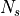 items in stratum
strata.
There are 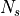 items in stratum  .
There are 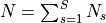 items in all.
.
There are 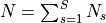 items in all.
There are  non-exclusive categories to which each of the
non-exclusive categories to which each of the  items might
belong; an item might belong to none of the categories.
That is, each item might be “labeled” with any of the 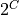 subsets
of the labels, including the empty set.
items might
belong; an item might belong to none of the categories.
That is, each item might be “labeled” with any of the 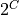 subsets
of the labels, including the empty set.
There are  “raters,” each of whom labels each of the items with zero
or more elements of .
“raters,” each of whom labels each of the items with zero
or more elements of .
Define 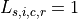, if rater  assigns label
assigns label  to item
to item  in
stratum ; and 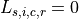 if not.
in
stratum ; and 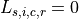 if not.
We observe 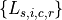 for 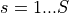; 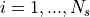;
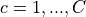; and  .
.
We want to know whether the categorizations are “reliable,” in the sense
that agreement among the raters is higher than would be expected
“by chance.” The reliability of each category is of interest,
rather than an overall rating for all categories.
Fix , since we are considering only one category at a time.
The null hypothesis for category is that, for each rater , and each
stratum , the values are exchangeable; that for
each rater , the values for different strata
are independent; and that the values are independent across raters.
Our test conditions on the sets of labels each rater assigns
within each stratum, but not on the items to which those labels are
assigned. The null distribution involves permuting the assignments each
given rater makes of category to items within each stratum ,
permuting independently across across raters and across strata.
The test statistic within stratum is
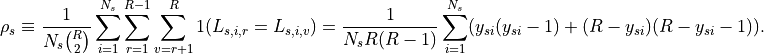
That is, within each stratum, we count the number of concordant pairs of
assignments. If all raters agree whether item in stratum
belongs to category , that contributes a term 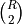 to the
sum. If only half agree, the term for item contributes
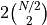 to the sum. The normalization makes perfect
agreement within stratum correspond to 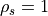.
To combine the results across strata to get an overall p-value, we could use any of the methods we’ve discussed, or the NPC (nonparametric combination of test) methods described in Pesarin and Salmaso, based on the p-values in different strata. For instance, Fisher’s combination statistic is
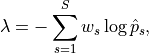
where the nonnegative weights 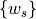 are chosen in some sensible manner (e.g., 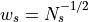 would be reasonable).
- permute.irr.compute_ts(ratings)[source]¶
Compute the test statistic
- Parameters
- ratingsarray_like
Input array of dimension [R, Ns] Each row corresponds to the ratings given by a single rater; columns correspond to items rated.
- Returns
- rho_sfloat
concordance of the ratings, where perfect concordance is 1.0
- permute.irr.simulate_npc_dist(perm_distr, size, obs_ts=None, pvalues=None, plus1=True)[source]¶
Simulates the permutation distribution of the combined NPC test statistic for S matrices of ratings
ratingscorresponding to S strata. The distribution comes from applyingsimulate_ts_distto each of the S strata.If obs_ts is not null, computes the reference value of the test statistic before the first permutation. Otherwise, uses the value
obs_tsfor comparison.If
keep_dist, return the distribution of values of the test statistic; otherwise, return only the number of permutations for which the value of the irr test statistic is at least as large asobs_ts.- Parameters
- perm_distrarray_like
Input array of dimension [B, S] Column s is the permutation distribution of 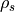, for s=1,…,S
- sizearray_like
Input array of dimension S Each entry corresponds to the number of items, Ns, in the s-th stratum.
- obs_tsarray_like
Optional input array of dimension S The s-th entry is , the concordance for the s-th stratum. If not input, pvalues must be specified.
- pvaluesarray_like
Optional input array of dimension S The s-th entry is the p-value corresponding to , the concordance for the s-th stratum. If not input, obs_ts must be specified.
- plus1bool
flag for whether to add 1 to the numerator and denominator of the p-value based on the empirical permutation distribution. Default is True.
- Returns
- dict
A dictionary containing:
- obs_npcfloat
observed value of the combined test statistic for the input data, or the input value of
obs_tsifobs_tswas given as input- pvaluefloat
A single p-value for the global test. The number of times that obs_npc was at least as extreme as the distribution of combined IRR statistics.
- num_permint
number of permutations
- permute.irr.simulate_ts_dist(ratings, obs_ts=None, num_perm=10000, keep_dist=False, seed=None, plus1=True)[source]¶
Simulates the permutation distribution of the irr test statistic for a matrix of ratings
ratingsIf
obs_tsis notNone, computes the reference value of the test statistic before the first permutation. Otherwise, uses the valueobs_tsfor comparison.If
keep_dist, return the distribution of values of the test statistic; otherwise, return only the number of permutations for which the value of the irr test statistic is at least as large asobs_ts.- Parameters
- ratingsarray_like
Input array of dimension [R, Ns]
- obs_tsfloat
if None,
obs_tsis calculated as the value of the test statistic for the original data- num_permint
number of random permutation of the elements of each row of ratings
- keep_distbool
flag for whether to store and return the array of values of the irr test statistic
- seedRandomState instance or {None, int, RandomState instance}
If None, the pseudorandom number generator is the RandomState instance used by np.random; If int, seed is the seed used by the random number generator; If RandomState instance, seed is the pseudorandom number generator
- plus1bool
flag for whether to add 1 to the numerator and denominator of the p-value based on the empirical permutation distribution. Default is True.
- Returns
- dict
A dictionary containing:
- obs_tsint
observed value of the test statistic for the input data, or the input value of
obs_tsifobs_tswas given as input- geqint
number of iterations for which the test statistic was greater than or equal to
obs_ts- num_permint
number of permutations
- pvaluefloat
geq / num_perm
- distarray-like
if
keep_dist, the array of values of the irr test statistic from thenum_permiterations. Otherwise,None.